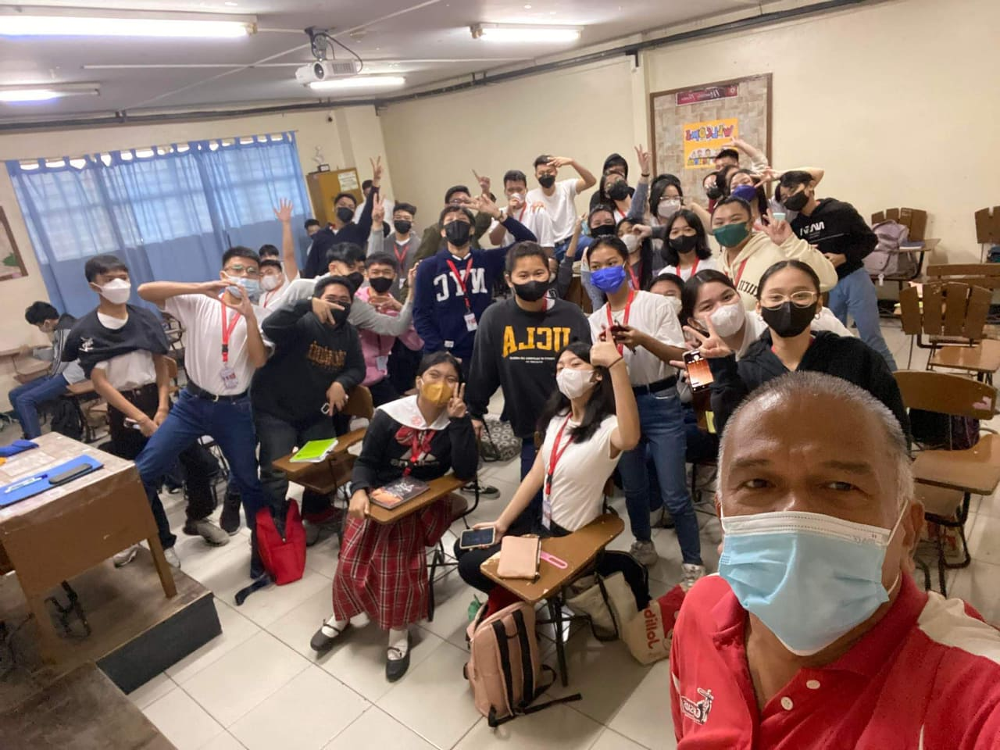
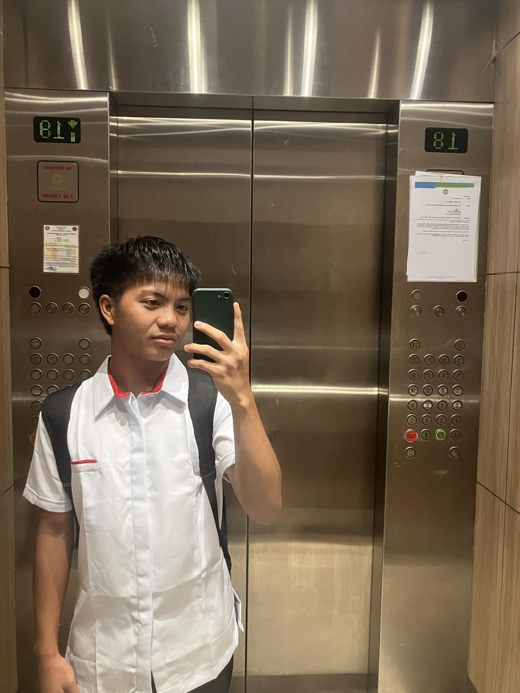

Ako po ay ipinanganak nung January 21, 2006 sa Samal, Bataan po. Ito ang kwento ng aking buhay - mula sa mga simpleng araw sa probinsya, hanggang sa mga hamon ng buhay estudyante sa Manila. Isang paglalakbay na puno ng pagbabago, pag-asa, at patuloy na pag-unlad.
Mga Unang Taon: Bataan at ang Aking Lola
Wala po ako masyadong memory nung time nag-aaral pa po ako sa Bataan nung bata pa po ako. Ang memory ko lang po nung bata ako is si Lola po, kasi po sya po lagi nag-aalaga sakin nung nasa Bataan pa po ako. Kasi po si Papa nag-aalaga po ng lupa namin, magsasaka po si Papa. At wala din po akong memory kay Mama, ni hindi ko nga po alam kung ano itsura ni Mama until recently, kasi po namatay na po sya nung time na baby pa lang daw po ako.
Kaya po lagi lang po ako nakikita si Lola po. Kaya po inampon po ako ni Dad, which is pinsan ko po, pero po Dad na po tawag ko saknya simula nung bata pa lang po ako. At nung time na inampon nya po ako, dun ko na po nameet mga pamangkin ko na kaedad ko lang. Kaya po naging close agad po kaming lahat, tas naglalaro po kami sa labas magdamag.
.jpg)
Memorable Moment: Madalas din po kaming mag-vacation nung time na yun, at ang isa sa mga favorite na pinuntahan po namin is Boracay, 2011 po ata yun. Kaya napaka-linis pa po talaga ng Boracay. Kaya ko po sya isa sa mga favorite ko, kasi po nung time na nag-Boracay po kami, ang dami pong nag-papicture sakin na mga Koreana. I dont know why, we all dont know why, pero nag-papic lang po talaga sila sakin.
Pero ang pinaka-favorite ko po talaga na memory ko po sa childhood ko po is yung lagi po kami naglalaro sa labas ng mga pinsan ko, kasama po namin mga tropa namin. Mala tipong umaga pa lang nasa labas na po kami, tas uuwi lang po kami pag kakain, tas matutulog po ng tanghali, tas pag hapon na po labas naman po uli hanggang gabi.
Teenage Years: Mga Pagbabago at Bagong Simula

My teenage years began nung time ako ay pumasok na ng high school at the age of thirteen. At nung time na un napaka-daming changes, kasi po public po ako nung elementary. Eh kapag public po, diba po sobrang gulo, maingay, makalat. Eh inenroll po ako ni Dad sa private and Catholic school, which is sa Blessed Sacrament Catholic School. Kaya po napaka-laki ng changes sakin.
Of course new subjects, new classmates, tas dagdag nyo pa po yung pressure galing sa po sa mga tao sa bahay. Pero overall yung experience ko po nung Grade 7 po ako is okay naman po. Dun ko po natutunan ung mga di natuturo sa public school, which is discipline. Tho hindi ko masyado naiimply nung time na un, kasi nga makulet ako, pero nadala ko naman sa next school ko. The transition from public to private Catholic education was challenging but transformative, teaching me the value of discipline and structured learning lessons that continue to guide my educational journey today.
Lumipat po kasi kami ng Pasig nung Grade 8 po ako, kaya po new classmates naman po. Eto na po yung time na nag-explore na po talaga ako, kasi po nagkaroon po ako ng girlfriend, which is si Audrey. She's my first love. She taught me how to love myself, she taught me how to understand people from their point of view. She really helped me a lot, not only to that but also in acads. Through meaningful relationships during my teenage years, I developed crucial interpersonal skills including empathy, perspective-taking, and self-awareness soft skills that complemented my academic development.
The COVID Challenge: Nung Grade 9 po bumalik na po kami ng Quezon City, so bumalik din po ako sa Blessed Sacrament Catholic School. Pero eto na po ung time na nagkaroon ng COVID, kaya po online ang klase. Dito na po nag-sisibagsakan ang mga grades ko, kasi po hindi po ako sanay and nahihirapan po ako, kasi po wala po akong PC nung Grade 9.
Pero nung Grade 10 binilhan naman na po ako ni Dad ng aking first laptop, and till now yan pa din po aking ginagamit. My first laptop, received in Grade 10, remains my primary tool for education today demonstrating resourcefulness, careful maintenance of educational tools, and appreciation for the investments made in my education by my family. Grade 11 andito na po kami sa current address po namin, which is sa San Juan in Manila po. Kasi po ang gusto po ni Dad is malapit po kami sa Manila para po di hassle sa pag-commute. Nag-aral po ako ng Senior High School sa Arellano University Juan Sumulong Campus, which is sa Legarda po ang location nila. Dito ko na po nakilala ang mga day ones na tropa ko po, at yun hanggang sa makagraduate po kami, sila sila pa din po kasama ko.
College Life: University of the East at Mga Bagong Kaibigan

Pero hindi ko na po sila kasama sa college, so new classmate and new subjects naman po. Ang napili ko pong school is University of the East. I took Bachelor of Science in Information Technology. First semester was fine, kumbaga reality versus expectation talaga ang nangyare sakin. Enrolling in BSIT at UE marked a significant decision in my academic career, and the gap between expectations and reality in my first semester taught me valuable lessons about adapting to higher education's demands and setting realistic goals.

And here ko na po nakilala si Gab, which is my bestfriend right now, and naniniwala ako na hanggang tumanda na kami magkasama neto ni Gab. Lahat po nasasabi ko sakanya, and nasasabi nya din po sakin lahat. Nandyan po sya pag kailangan ko sya, nandyan din po ako pag kailangan nya ako.
Dito ko na din po nakilala sila Lexcen and Rohan and Jayvee and Jamir. Kaso po si Lexcen and Rohan umalis na po kaagad nung mag-start na po ng second sem dahil sa family problems. Second semester it's just me, Jayvee and Gab. We thought na wala kaming magiging close, pero there's one circle of friend na sobrang makukulit and friendly, which is sila Hadley, Eugene, Tobey and Chantil.
My First Circle:
Si Hadley po sya po ung tipong tao na tahimik lang, pero pag kakailangan mo lagi syang nandyan. Si Eugene naman po is di ko po kasi sya masyadong close, lagi pong may awkward moments saming dalawa, hindi ko din po alam kung baket. Si Tobey naman po isa din po yang makulit, parang Gab lang po pero mas makulit po siguro. Si Chantil po pinaka-makulit saming lahat.
Pero may iba din po akong circle of friend, which is sila Pau, Marylene, Marla, Ryuji, Mark, Ken, and MK. Si Pau sya ung tipong napaka-sayahing tao. Si Marylene sya po ung tipong mabait, pero kapag nagalit, galit talaga. Si Marla naman po para po syang nanay sa circle po nila, nanay in a good way. Si Ryuji naman po para din po syang si Hadley na tahimik lang po, pero pag kakailangan mo lagi po syang nandyan. Si Mark po di ko po masyadong close si Mark, pero makulit din po yan si Mark, good vibes po palagi. Si Ken po tahimik lang. Si MK naman po sobrang kulet. Managing and collaborating with diverse personalities has enhanced my teamwork skills, teaching me how different strengths complement each other in group projects and academic pursuits.
Hanggang Ngayon: Ang Patuloy na Paglalakbay
Eto na din po ung downfall ng UE, for me lang po, kasi po super duper dami ng nagsialisan po sa UE. Despite witnessing many classmates leave the university, I chose to persist and adapt, demonstrating resilience and commitment to my educational goals even in challenging circumstances. College life taught me a lot about friendship, loyalty, and dealing with change. Mula sa mga simpleng araw sa Bataan kung saan ang buhay ay walang komplikasyon, hanggang sa mga hamon ng kolehiyo sa Manila - ang bawat yugto ng aking buhay ay may sariling kwento at aral. Ang mga taong dumaan sa aking buhay - si Lola, si Dad, si Audrey, at ang aking mga kaibigan - lahat sila ay bahagi ng aking pagiging ako.
Hindi ko alam kung saan ako dadalhin ng kinabukasan, pero alam ko na ang mga karanasang ito ang bumubuo sa kung sino ako ngayon. At habang patuloy akong lumalaki at natututo, dala-dala ko ang mga alaala at aral mula sa nakaraan, habang sabik na naghihintay sa kung ano pa ang darating.